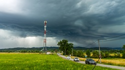

<!DOCTYPE html>
<html lang="en">
<head>
  <meta charset="utf-8" />
  <meta name="viewport" content="width=device-width, initial-scale=1.0"/>
  <title>CroatianStorm's chase arhiva</title>
  <!-- Favicon -->
  <link rel="icon" type="image/png" href="/images/favicon.png">
  
  <link rel="stylesheet" href="https://unpkg.com/leaflet@1.9.4/dist/leaflet.css" crossorigin="" />
  <script src="https://unpkg.com/leaflet@1.9.4/dist/leaflet.js" 
          integrity="sha256-20nQCchB9co0qIjJZRGuk2/Z9VM+kNiyxNV1lvTlZBo=" 
          crossorigin=""></script>
  <!-- Leaflet Routing Machine (added) -->
  <link rel="stylesheet" href="https://unpkg.com/leaflet-routing-machine@latest/dist/leaflet-routing-machine.css" />
  <script src="https://unpkg.com/leaflet-routing-machine@latest/dist/leaflet-routing-machine.js"></script>
  
  <style>
    html, body, #map { height: 100%; margin: 0; padding: 0; }
    /* Optional: nicer tooltip look */
    .custom-tooltip {
      background: rgba(0,0,0,0.75);
      color: white;
      border-radius: 4px;
      padding: 4px 8px;
      font-size: 13px;
      border: none;
    }
  </style>
</head>
<body>
  <div id="map"></div>

  <script>
    var map = L.map('map').setView([45.1, 16.0], 7);

    L.tileLayer('https://{s}.tile.openstreetmap.org/{z}/{x}/{y}.png', {
      attribution: '&copy; <a href="https://www.openstreetmap.org/copyright">OpenStreetMap</a> contributors',
      maxZoom: 19
    }).addTo(map);
    map.invalidateSize();

    // Variable to store the current route (shared for now, but scalable per marker)
    var currentRoute = null;

    // Custom icon for all markers
    var customIcon = L.icon({
      iconUrl: 'images/location.png',
      iconSize: [32, 32],
      iconAnchor: [16, 32],
      popupAnchor: [0, -32],
      tooltipAnchor: [0, -20]
    });

    // Common starting/routing points (reusable for all chases)
    var zagreb = [45.7994, 15.9786];
    var zagrebistok = [45.8008, 16.0546];
    var komin2023 = [46.0018, 16.2822];
    var popovec2023 = [45.8532, 16.1388];
    var cazma2023 = [45.7524, 16.6085];
    var NPivanicgrad2023 = [45.6907, 16.3909];
    var obrez2018 = [45.7251, 15.9451];
    var petrinjci2018 = [45.3708, 16.5057];

    // Scalable array of chases – add more objects here for new chases
    var chases = [
      {
        location: popovec2023,  // Popovec location
        tooltip: "Lov na oluje 13.07.2023. (Popovec)",
        popup: '<div style="text-align:center; min-width:180px;">' +
                 '<h4 style="margin:8px 0 4px;">Lov na oluje 13.07.2023.</h4>' +
                 '' +
                 '<p style="margin:4px 0; font-size:13px;">Superćelija kod Popovca i Čazme</p>' +
                 '<a href="20230713.html" target="_blank" ' +
                    'style="display:inline-block; padding:6px 12px; background:#0066cc; color:white; ' +
                           'text-decoration:none; border-radius:4px; font-weight:bold;">' +
                    'Pročitajte blog →' +
                 '</a>' +
               '</div>',
        waypoints: [zagreb, zagrebistok, komin2023, popovec2023, NPivanicgrad2023, cazma2023],  // Route for this chase
        maxWidth: 220
      },
      {
        location: cazma2023,  // New marker at Cazma
        tooltip: "Lov na oluje 13.07.2023. (Čazma)",
        popup: '<div style="text-align:center; min-width:180px;">' +  // Same popup as requested
                 '<h4 style="margin:8px 0 4px;">Lov na oluje 13.07.2023.</h4>' +
                 '' +
                 '<p style="margin:4px 0; font-size:13px;">Superćelija kod Popovca i Čazme</p>' +
                 '<a href="20230713.html" target="_blank" ' +
                    'style="display:inline-block; padding:6px 12px; background:#0066cc; color:white; ' +
                           'text-decoration:none; border-radius:4px; font-weight:bold;">' +
                    'Pročitajte blog →' +
                 '</a>' +
               '</div>',
        waypoints: [zagreb, zagrebistok, komin2023, popovec2023, NPivanicgrad2023, cazma2023],  // Same route as popovec marker
        maxWidth: 220
      },
      {
        location: obrez2018,  // New marker at Odranski Obrež
        tooltip: "Lov na oluje 08.06.2018. (Odranski Obrež)",
        popup: '<div style="text-align:center; min-width:180px;">' +  // Same popup as requested
                 '<h4 style="margin:8px 0 4px;">Lov na oluje 08.06.2018.</h4>' +
                 '' +
                 '<p style="margin:4px 0; font-size:13px;">Superćelije u središnjoj Hrvatskoj</p>' +
                 '<a href="20230713.html" target="_blank" ' +
                    'style="display:inline-block; padding:6px 12px; background:#0066cc; color:white; ' +
                           'text-decoration:none; border-radius:4px; font-weight:bold;">' +
                    'Pročitajte blog →' +
                 '</a>' +
               '</div>',
        waypoints: [zagreb, obrez2018, petrinjci2018],
        maxWidth: 220
      }
    ];

    // Loop through chases to create markers dynamically (scalable)
    chases.forEach(function(chase) {
      var marker = L.marker(chase.location, { icon: customIcon })
        .bindTooltip(chase.tooltip, { permanent: false, direction: 'top' })
        .bindPopup(chase.popup, { maxWidth: chase.maxWidth, className: 'custom-popup' })
        .addTo(map);

      // Attach route events to this specific marker
      marker.on('popupopen', function() {
        if (currentRoute) {
          map.removeControl(currentRoute);
          currentRoute = null;
        }

        currentRoute = L.Routing.control({
          waypoints: chase.waypoints.map(L.latLng),  // Use this chase's waypoints
          createMarker: function() { return null; },
          addWaypoints: false,
          routeWhileDragging: false,
          show: false,
          lineOptions: {
            styles: [{color: '#0066cc', weight: 6, opacity: 0.8}]
          }
        }).addTo(map);

        currentRoute.on('routesfound', function(e) {
          var bounds = L.latLngBounds(e.routes[0].coordinates);
          map.fitBounds(bounds, {
            padding: [250, 250],
            maxZoom: 11
          });
        });
      });

      marker.on('popupclose', function() {
        if (currentRoute) {
          map.removeControl(currentRoute);
          currentRoute = null;
        }
        map.setView([45.1, 16.0], 7);
      });
    });

  </script>
</body>
</html>
